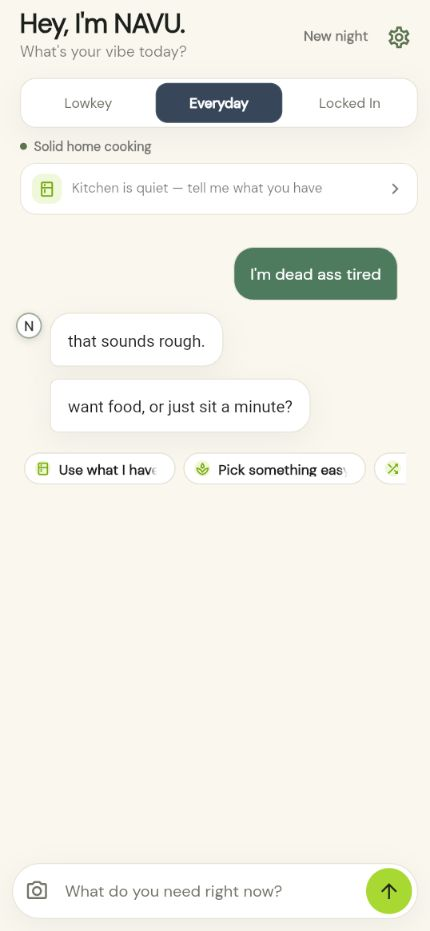
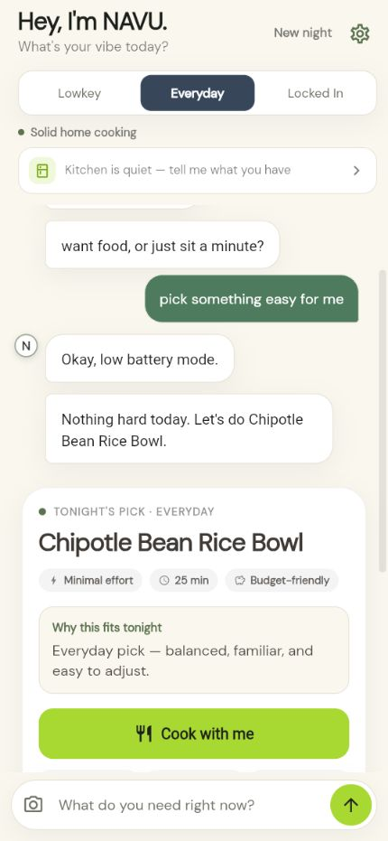
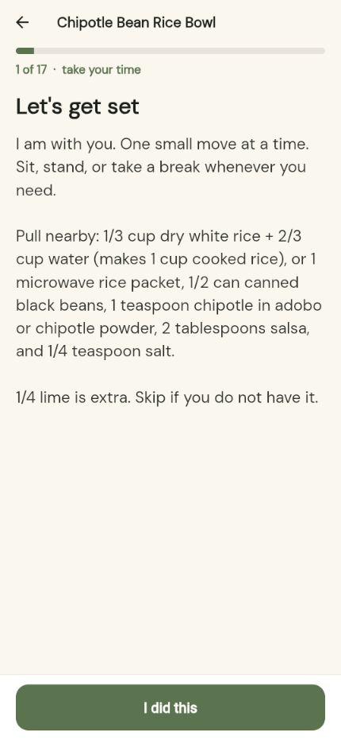

01
Talk first
A companion, not a command line.
Say it plainly. NAVU meets your energy before asking you to make another decision.
Free forever · Talks first · Then a plate
NAVU sits with you like a person, then helps you eat. One complete plate. US kitchen amounts. No paywall. No ads in chat.

A real night with NAVU
NAVU doesn’t rush past how you feel. It listens, makes one useful decision, then stays beside you one small step at a time.
Talk first
Say it plainly. NAVU meets your energy before asking you to make another decision.
One good choice
One complete meal matched to your vibe, time, effort and budget — with a clear reason it fits tonight.

Stay with me
No wall of instructions. NAVU breaks dinner into calm, human-sized steps and lets you move at your pace.

The vibe changes the voice and the plate — not just the hype copy.
Gentle
Easy wins only. Still a real dinner when the night is heavy.
Home
Solid home cooking. Balanced, familiar, easy to adjust.
Worth it
Extra seasoning and a real technique — not a 16-minute “quick and easy.”
When we pick tonight’s plate, the list is for that plate. Already got rice? That’s Have. Still need the chicken? That’s Need.
The promise
No subscription wall. No ads in the chat. You pick the food you want — NAVU never assumes your cultural identity.
The companion is taking shape now. NAVU isn’t in the App Store or Google Play yet — those buttons are coming when the app is ready.
Built by Joseph Cruz. Cook-together uses cups, tablespoons, and °F — US kitchen only.
NAVU is not a doctor and is not medical advice. NAVU is not affiliated with, endorsed by, or part of the U.S. Department of Veterans Affairs.